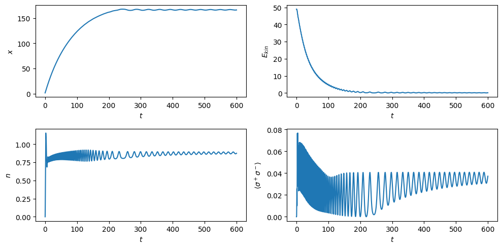
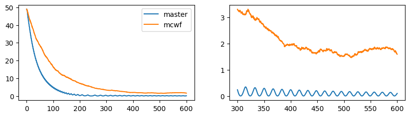

This notebook can be found on github
Cavity cooling of a two-level atom
Cavity cooling relies on spontaneous emission of an atom that is coupled to a field that has a certain energy mismatch. The atomic motion then compensates for the missing energy.
Consider a two-level atom moving in a coherently driven cavity. The Hamiltonian is
$H = -\Delta_c a^\dagger a - \Delta_a\sigma^+\sigma^- + \eta(a + a^\dagger) + g\cos(x)(a^\dagger \sigma^- + a\sigma^+),$
where $\Delta_c = \omega_l - \omega_c$, $\Delta_a=\omega_l - \omega_a$ and $\omega_c$ is the cavity frequency, $\omega_a$ the atomic transition frequency and $\omega_l$ the frequency of the laser driving the cavity. The pump strength is $\eta$, while the atom couples to the cavity with $g$ and the cavity has a mode function $\cos(x)$. The atomic position $x$ is in units of the inverse cavity wave number. Note that this is a number rather than an operator since we treat the atomic motion classically.
Decay and cavity damping are modeled by the Liouvillians
$\mathcal{L}_c[\rho] = \kappa(2a\rho a^\dagger - a^\dagger a \rho - \rho a^\dagger a),$
$\mathcal{L}_a[\rho] = \gamma(2\sigma^-\rho\sigma^+ - \sigma^+\sigma^-\rho - \rho\sigma^+\sigma^-)$.
In addition we have the classical differential equations of the atomic motion obtained by making use of the Eherenfest theorem,
$\dot{x} = 2\omega_r p$,
$\dot{p} = -\partial_x\langle H\rangle = 2\sin(x)~\Re\left\{\langle a^\dagger\sigma^-\rangle\right\},$
where $p$ is the momentum in units of the cavity wave number and $\omega_r=k_c^2/(2m)$ is the recoil frequency.
Note, that in order for the cavity to cool the atom, a cavity photon must have less energy than a photon on resonance with the atom, i.e. the cavity must be red-detuned from the atom ($\omega_c < \omega_a$). We will now use the implemented semi-classical master equation to solve the above dynamics.
First, we define the necessary parameters, our Hilbert space and corresponding operators.
using QuantumOptics# ParametersNc = 16γ = 1.g = γ/2.κ = 0.5γωr = .15γΔc = -γΔa = -2γη = γtmax = 600tsteps = 10*tmaxdt = tmax/tstepstlist = [0:dt:tmax;]# Hilbert spacebc = FockBasis(Nc)ba = SpinBasis(1//2)# Operatorsa = destroy(bc) ⊗ one(ba)ad = dagger(a)sm = one(bc) ⊗ sigmam(ba)sp = dagger(sm)We now define the Hamiltonian as two separate parts, one that is position dependent and one that is independent of $x$. This is for reasons of performance, since it is more efficient to simply add the two parts where one is multiplied by $\cos(x)$ than creating the entire Hamiltonian in every time-step.
# HamiltonianH0 = -Δc*ad*a - Δa*sp*sm + η*(a + ad)Hx = g*(a*sp + ad*sm) # ∝ cos(x)# Jump operatorsJ = [sqrt(2κ)*a, sqrt(2γ)*sm]Jdagger = map(dagger, J)The semi-classical time evolution requires two functions as arguments: one function that returns the updated Hamiltonian and jump operators at every step and one that updates the vector containing the time derivatives of the classical variables. Note, that the efficiency of the operations performed inside these function is very important for overall perfomance, each function is called at every time-step.
function fquantum(t, psi, u) # psi is the quantum, u the classical part x = u[1] return H0 + Hx*cos(x), J, Jdaggerendadsm = ad*sm # Define to avoid doing a multiplication at every stepfunction fclassical!(du, u, psi, t) # du is a vector containing the increments of the classical variables du[1] = 2ωr*u[2] du[2] = 2g*sin(u[1])*real(expect(adsm, psi))endBefore we calculate the time evolution, we need to define the initial state which needs to be a semi-classical one. It consists of a quantum part (a ket or density operator) and a vector of classical variables. Note: the vector containing the classical variables needs to be complex.
x0 = sqrt(2) # Some arbitrary initial positionp0 = 7.0 # Some arbitrary initial momentumu0 = complex.([x0, p0])ψ0 = fockstate(bc, 0) ⊗ spindown(ba)ψsc0 = semiclassical.State(ψ0, u0)Finally, we can calculate the time evolution by calling dynamic master equation solver from the semiclassical module.
tout, ρt = semiclassical.master_dynamic(tlist, ψsc0, fquantum, fclassical!)We can now calculate expectation values as with any other density operator and retrieve the classical variables.
x = []p = []for r=ρt push!(x, real(r.classical[1])) push!(p, real(r.classical[2]))endn = real(expect(ad*a, ρt))pe = real(expect(sp*sm, ρt))using PyPlotfigure(figsize=(10, 5))subplot(221)plot(tout, x)xlabel(L"$t$")ylabel(L"$x$")subplot(222)plot(tout, p.^2)xlabel(L"$t$")ylabel(L"$E_{kin}$")subplot(223)plot(tout, n)xlabel(L"$t$")ylabel(L"$n$")subplot(224)plot(tout, pe)xlabel(L"$t$")ylabel(L"$\langle \sigma^+\sigma^-\rangle$")tight_layout()
Including recoil via MCWF
In the treatment so far we have neglected the momentum kick the atom gains when it spontaneously emits a photon out of the cavity. This approximation is valid as long as the momentum of the atom is much larger than the recoil momentum of a single photon, i.e. $p \gg k_c$. However, since the cooling is quite efficient we might be going below this limit.
We can include the recoil by making use of semiclassical Monte-Carlo wave function (MCWF) trjacetories. To this end, we need to implement the recoil event via a classical jump which occurs when the atom spontaneously jumps from the excited to the ground state.
The treatment here will be somewhat simplified, thus giving qualitative insights only. Namely, we would actually have to take into account the dipole pattern of spontaneous emission. However, we are working only in 1D and for simplicitly will simply assume that any momentum kick in the interval $[-k_c,k_c]$ is equally likely. Since the momentum in our computation is in units of $k_c$, this amounts to a uniform distribution in the interval $[-1,1]$.
The function adding such a recoil to the momentum has the following form:
using Randomfunction fjump_classical!(u,psi,i,t) if i==2 u[2] += 2*rand()-1.0 end return nothingendNote that the function above updates u[2] (the momentum) in-place only if the index i==2. This is because i is the index of the list of jump operators J, and thus i==1 corresponds to a photon leaving the cavity, which does not have any direct effect on the momentum.
Now, we compute the momentum for many different MCWF trajectories.
Ntraj = 200fout = (t,psi)->real(psi.classical[2]) # save only the momentump_tot = Vector{Float64}[]for i=1:Ntraj t_, p_ = semiclassical.mcwf_dynamic(tlist, ψsc0, fquantum, fclassical!, fjump_classical!; fout=fout) push!(p_tot, p_)endThe kinetic energy is essentially given by $\omega_r\langle \hat{p}^2\rangle$ (where $\hat{p}$ is the momentum operator). In the previous treatment we assumed the motion to be fully classical, such that the kinetic energy is merely proportional to $p^2$. Due to the more rigorous treatment of recoil, we can now actually compute the variance of $p$ from the multiple trajectories. Note, that we will do so by using the var function, which is another simplification, since it assumes a Gaussian distribution.
using StatisticsEkin = zeros(length(tlist))for j=1:length(tlist) p_ = [p_tot[i][j] for i=1:Ntraj] Ekin[j] = var(p_) + mean(p_)^2endFinally, we compare this to the previously obtained results.
figure(figsize=(10,2.5))subplot(121)plot(tlist,p.^2, label="master")plot(tlist,Ekin, label="mcwf")legend();subplot(122)index = div(length(tlist),2)plot(tlist[index:end],p[index:end].^2, label="master")plot(tlist[index:end],Ekin[index:end], label="mcwf")
As we can see, the recoil indeed affects the cooling process. On the one hand, it causes the cooling process to be considerably slower. On the other hand, as we can see when zooming in on the final part of the time evolution of the kinetic energy (on the right), it also leads to a higher final temperature than before.